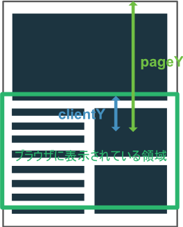

マウス
解説/アルゴリズム
ブラウザでマウスを扱うために、TypeScript からクリックやオーバーのようなイベント、どのボタンが押されたか、キーとの連携などが取得できます。
マウスイベント
| イベント名 | 発生する条件 |
|---|---|
| mousedown | 要素上でマウスボタンが押された |
| mouseup | 要素上でマウスボタンが離された |
| mouseover | 外から要素内にマウスポイントが入ってきた |
| mouseout | 要素内から外にマウスポイントが出た |
| mousemove | 要素上でマウスが動かされた |
| click | 要素上でマウスボタンがクリックされた |
| contextmenu | 要素上で右マウスボタンが押された |
| dblclick | 要素上でマウスボタンがダブルクリックされた |
document.addEventListener("mousedown", () => {
// 画面のどこかでマウスボタンが押されたときに呼ばれる
console.log(1);
});
const container = document.getElementById("container");
container.addEventListener("click", () => {
// idがcontainerの要素上でクリックされたときに呼ばれる
console.log(2);
});
マウスイベントを受け取りたい要素にaddEventListenerで、イベント名とコールバックで呼ばれる関数を登録します。
on ～
document.onmousedown = () => {
// 画面のどこかでマウスボタンが押されたときに呼ばれる
};
const container = document.getElementById("container");
container.onclick = () => {
// idがcontainerの要素上でクリックされたときに呼ばれる
};
要素にはonmousedownやonclickのような、on{イベント名}というイベントハンドラがあり、これを利用するとaddEventListenerを使わず簡潔に記述することができます。
ただしイベントハンドラに指定できる関数は一つだけになります。
<button onclick="alert(123);"></button>
<div class="container" onclick="alert(456);"></div>
on～系のイベントハンドラは要素の属性でもあるので、HTML から直接記述することができます。
マウスイベントの補足
mouseupは対象の要素外でマウスボタンが押された状態で、対象の要素上に移動し、そこで離された場合でもイベントが発生します。
clickは対象の要素外でマウスボタンが押された状態で、対象の要素上に移動し、そこで離された場合、イベントが発生しません。
どのボタンが押されたか
document.onmousedown = (event: MouseEvent) => {
console.log(event.which);
};
MouseEvent の which プロパティからどのボタンが押されたかを数値として確認できます。
| ボタン | which |
|---|---|
| 左ボタン | 1 |
| 中央ボタン | 2 |
| 右ボタン | 3 |
キーとの連動
document.onmousedown = (event: MouseEvent) => {
if (event.shiftKey && event.ctrlKey) {
// ShiftキーとCtrlキーを押しながら該当のマウスイベントが発生した場合
}
};
マウスイベント発生時に特定のキーが押されていたかを確認できます。
| プロパティ | キー |
|---|---|
| shiftKey | Shift キー |
| ctrlKey | Ctrl キー |
| altKey | Alt キー |
| metaKey | Meta キー |
マウス位置
document.onmousemove = (event: MouseEvent) => {
console.log(event.pageX, event.pageY);
console.log(event.clientX, event.clientY);
};
(pageX, pageY), (clientX, clientY)ともにマウス位置を返すプロパティですが、スクロールされているときに返す値の違いが出ます。

pageYはページ最上部からマウスポインタがある位置までの距離ですが、clientYは今ブラウザに表示されている領域最上部からの距離を返します。
x 軸であるpageX / clientXも同様となります。